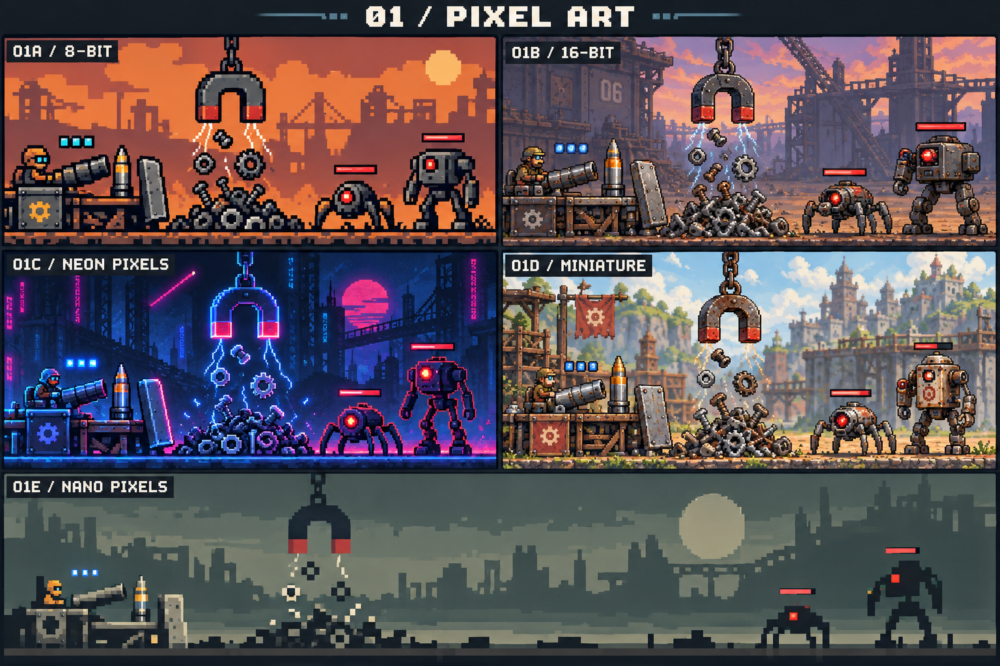

Keep any variants that appeal to you:
Your shortlist (0)
Saved in this browser when available. Nothing is sent or approved automatically.
No favourites yet. Three to five is a useful starting point.
Board 16 is the selected style anchor: 16B for preparation, 16C for attack. Earlier alternatives remain available for reference.

Keep any variants that appeal to you:
Saved in this browser when available. Nothing is sent or approved automatically.
No favourites yet. Three to five is a useful starting point.